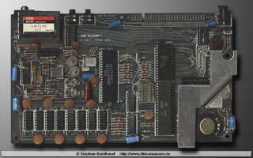
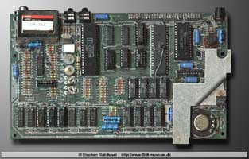
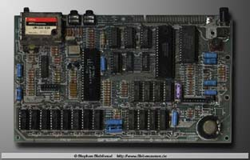
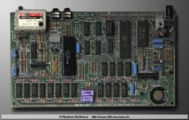

Spectrum 48K Board Revisions
During the six years of production of the ZX Spectrum, the machine underwent a considerable number of internal modifications to its ROM and other circuitry. The biggest changes were, of course, occasioned by the step up to 128K and then to the Amstrad designs. In all, there were at least thirteen different versions of the machine. This caused predictable problems with backwards compatibility. The issue was much worse with the 128K machines, with many 48K games, such as Elite, being totally incompatible. In many cases, special 128K-only updates had to be produced.
It is often possible to determine which version of the Spectrum 16/48K one has without opening the case, as there are a number of clues:
- If the rubber keys are a light fawn colour it's an issue 1 board.
- If the keys are dark grey, look into the edge connector slot to see whether an aluminium heatsink is visible -especially at the power socket end. If you don't see the heatsink it's an issue 2 board which has the heatsink near the forward corner of the board, under the keyboard.
- If the heatsink is visible it's an issue 3 or 3B board - there is very little difference between them.
Although the Spectrum+ usually has an issue 3B board, this cannot always be assumed - the Spectrum+ keyboard upgrade kit allowed owners of older machines to house their old circuit boards in new cases.

Issue 1
Issue 1 was the original version of the Spectrum, released in 1982. The large zig-zag shaped heat sink on the right of the circuit board is a feature shared with the latter Issue 2, but the key difference is in the memory. The Issue 1 is essentially a 16K Spectrum, with only the first 16K actually mounted on the board. For the 48K Issue 1, the remaining 32K is carried on a small daughter board which is fixed to the rear of the main board.
Some issue 1 boards also have a curious additional circuit nicknamed "the spider" or "the dead cockroach" - due to timing error in the ULA chip it was necessary to fit an extra 74LS(X) circuit, mounted on its own small board suspended by little legs above the main board.
Overall, some 60,000 Issue 1 Spectrums were sold, making it one of the rarest versions.

Issue 2
Introduced late in 1982, Issue 2 was very similar to its predecessor, with the major difference being that all of the memory was now mounted directly on the board. This was a reaction to the success of the 48K Spectrum, effectively establishing that model as the default Spectrum. The chip error that had necessitated the "dead cockroach" was also fixed. The most visible exterior change was a new colour for the keys - now blue, rather than grey as before, to improve legibility under electric lighting. More than 500,000 Issue 2 Spectrums were sold in 1982-83.

Issue 3
The Issue 3 was the most widely available of all Spectrum versions, with over 3,000,000 sold. It represented a radical departure from the earlier versions, with a redesigned circuit board, an uprated buzzer added to make the BEEP louder and a new low-power ULA introduced.
The ULA modification caused significant compatibility problems, although to be fair this was not Sinclair's fault. The keyboard input port also reads in a value from the EAR (microphone in) socket and on the issue 1 and 2 Spectrums, this value is binary 1. On issue 3 Spectrums, this value is not maintained because, to reduce power consumption, the values of the pull-up resistors are altered. The result is that the EAR bit now floats until the ULA has warmed up. The unfortunate consequence is that games and other software which check the whole byte, and not just the keyboard bits, will not work. This was only a problem in the first place because of sloppy programming - keyboard routines were not suppose to check the whole keyboard input byte, but lazy programmers did it anyway.

Issue 3B
The Issue 3B was a very minor redesign, built using slightly different components and circuitry. There is very little practical difference between it and the earlier Issue 3. The board is usually to be found in the Spectrum+.
Issue 4A/4B
A 6C001-7 ULA chip is the main new feature of the Issue 4A and 4B boards, which otherwise are virtually identical to the Issue 3B.
Issue 5
The Issue 5 is a major redesign, or more precisely a tidying-up: six decoder/multiplexer chips (IC3, IC4, IC23, IC24, IC25 and IC26) were replaced with a Mullard ULA type ZX8401. A 74LS04 hex inverter chip (IC28) provides the six inverters required for the new circuit. As might be expected, these changes greatly altered the appearance of the board; however, they did not significant change its operation at the software level.
Issue 6
The final version of the Spectrum 48K, the Issue 6, differs only in fairly minor ways from its immediate predecessor: on some boards, the main ULA is provided by Saga rather than Ferranti and certain components (principally capacitors and resistors) differ.